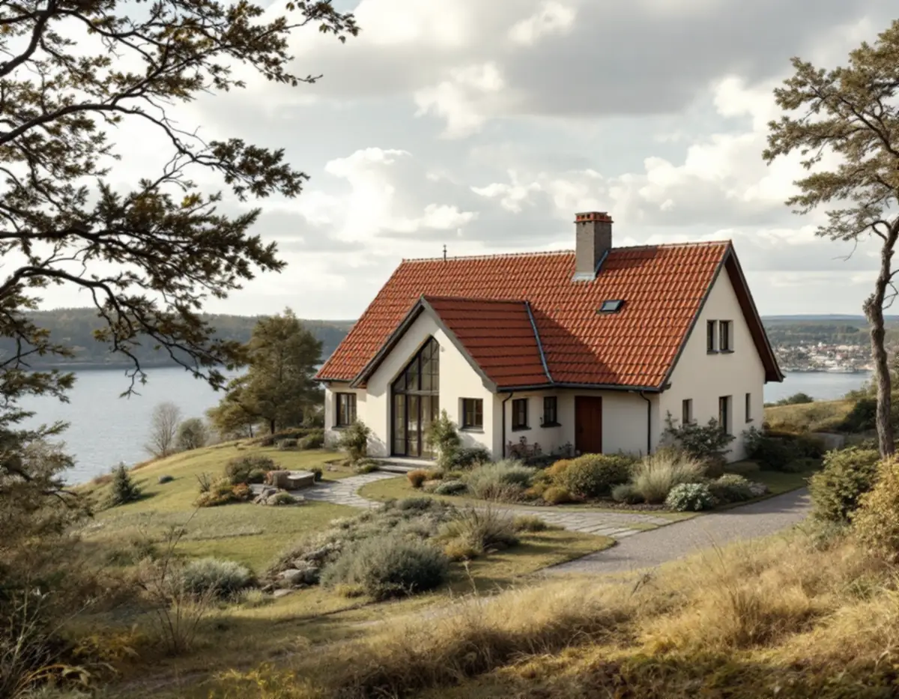
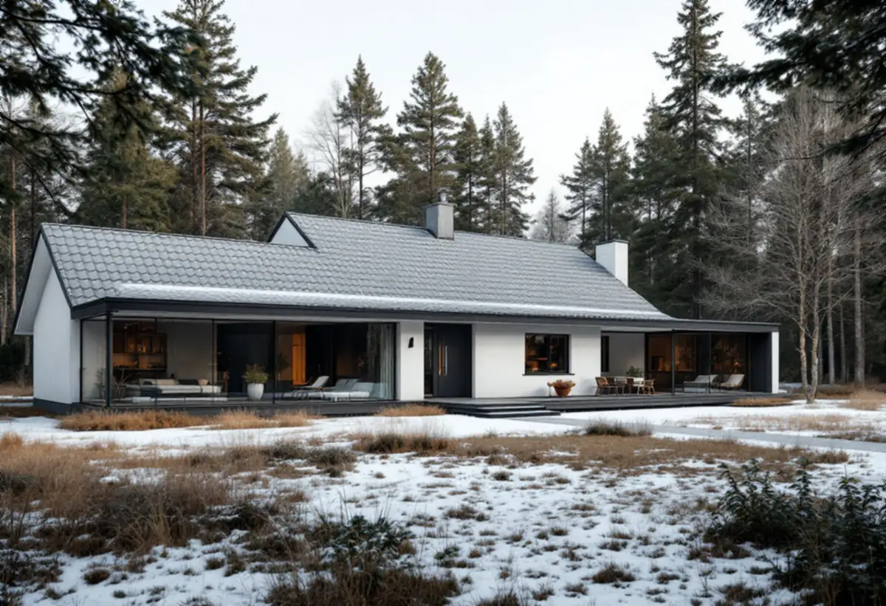

Läs huset och området
Vi börjar med husets ålder och läge – egnahemskvarter, stationsort eller sommarstugeområde – och kollar om det finns med i kulturmiljöinventeringen.
En takrenovering i Södertälje gäller ofta ett tidigt 1900-talshus i ett egnahemsområde, en villa från 1940–70-talen i Järna eller ett permanentat fritidshus vid Mälaren. Vanligast är en omläggning med nytt underlag och nya plåtdetaljer där takets ursprungliga form och skorsten får vara kvar.

Kring sekelskiftet 1900 började Södertälje stad köpa gårdar i utkanterna och stycka marken i små tomter för självbyggen. Så uppstod egnahemsområden i bland annat Hagaberg, Västergård, Pershagen, Blombacka, Högantorp, Talby och Rosenborgs villastad, enligt kommunens kulturmiljöinventering.
Under 1960- och 70-talen byggdes i stället storskaliga bostadsområden i stadsdelar som Västergård, Bårsta, Ronna, Saltskog, Geneta, Pershagen och Hovsjö. På flera håll ligger därför sekelskiftsvillor och efterkrigstidens hus nära varandra.
Utanför staden finns stationsorterna Järna och Hölö och landsbygden i Enhörna med sina sommarstugeområden vid Mälaren. Kommunens fritidshusområden tillkom främst under 1960–70-talen, och i dag är trycket stort att göra om dem till permanentbostäder. Mer om vårt arbete i kommunen finns på sidan takläggare i Södertälje.

Blombacka styckades från 1907 i ett 50-tal tomter, och det var främst arbetare vid stadens industrier som byggde där. Inventeringen beskriver en träpanelarkitektur från 1910-talet med branta sadeltak, dekorativa vindsfönster och äldre tegelskorstenar med utkragande krön.
Det är just de detaljerna som lätt försvinner vid en takrenovering. Vi behåller takfallets lutning och taksprånget, och skorstenskrönet kläs så att formen fortfarande syns i stället för att gömmas under ett standardbeslag.
I Pershagen och Hagaberg har stora tomter delats sedan 1950-talet och fått nyare villor. Där kan grannhusen ha helt olika tak, så vi utgår från varje hus för sig.
Järna har enligt inventeringen många småhus av egnahemskaraktär från 1930–40-talen med flacka sadeltak, bland annat längs Södra Järnvägsgatan och i Tälleby. I Södra Starrbäcken ligger enplanshus med tegelfasad från 1950–60-talen, och väster om Åsgatan finns modernistiska villor med pulpettak.
Flacka sadeltak och pulpettak behöver en annan lösning än en brant pannbelagd sadel. Vid låg lutning är det ofta papp eller falsad plåt som håller tätt, och anslutningarna mot vägg och skorsten blir avgörande. Läs mer om plåttak.
Kring Kallfors, Starrbäcken och Eneområdet, där villorna främst är från 1960–70-talen, möter vi oftare pannor på originalunderlag. Där avgör läktens och underlagspappens skick om en omläggning räcker.
Södertälje ligger mellan Mälaren och Saltsjön, och flera stadsdelar ligger nära vattnet. Hus i sluttningarna mot vattnet, som i Bergvik ner mot Mälaren, får mer vind och fukt mot takfoten än hus inne i kvarteren.
I Enhörna ligger sommarstugeområdet Sandviken intill Mälaren, och i den södra delen står fritidshus från 1960-talet uppe på bergknallar i tallskog. Där samlas barr i rännor och ränndalar och taken håller fukt i skuggan. Rensade hängrännor och behandling mot mossa gör att en renovering håller längre.
Den 1 december 2025 ändrades plan- och bygglagen, och Boverket beskriver att byte av taktäckning eller kulör på en- och tvåbostadshus därefter normalt är lovfritt. Det gäller inte om detaljplan eller områdesbestämmelser har skyddsbestämmelser, om huset är särskilt värdefullt eller om utökad lovplikt finns. Höjs taket kan det räknas som tillbyggnad, så stäm av med kommunen innan takets form eller höjd ändras.
Södertälje kommun skriver på sidan om fasad, tak, fönster och dörrar att bygglov krävs om huset ligger i ett kulturmiljöområde med utökad lovplikt, både inom och utanför detaljplan. Kommunens kulturmiljöinventering är uppdelad efter socknarna – Mörkö, Hölö, Järna, Enhörna, Vårdinge, Södertälje med omgivande land och stadskärnan.
Inventeringen är ett vägledande underlag för kommunens planering. Ligger huset i ett av de beskrivna områdena, till exempel Blombacka, är det klokt att fråga kommunens bygglovsrådgivning innan nytt material väljs. Mer om reglerna finns i bygglov vid takbyte.
På panelvillorna i egnahemsområdena handlar det ofta om ny råspont där den gamla tagit skada, ny underlagspapp och läkt och återlagt tegel eller en ny täckning som passar huset. Tegelskorstenen ses över i samma veva, se skorstensrenovering.
På 1950–70-talsvillorna är fotplåt, vindskivor och ränndalar de vanligaste läckställena. Vi byter dem tillsammans med underlaget och kontrollerar att takfoten ventilerar. Vill du läsa om metoden i allmänhet finns sidan om takrenovering.
Vi börjar med husets ålder och läge – egnahemskvarter, stationsort eller sommarstugeområde – och kollar om det finns med i kulturmiljöinventeringen.
Vi kontrollerar täckning, plåt och skorsten utifrån och råspont, fukt och ventilation från vinden.
Branta takfall, taksprång och murade skorstenar på äldre hus behålls; vi föreslår material som passar husets tid.
Gammal täckning tas ner, skadad råspont byts och ny papp, läkt och plåtdetaljer monteras etappvis.
Pannor eller plåt läggs, hängrännor och stuprör monteras och anslutningar mot vägg och skorsten tätas.
Vi går igenom taket tillsammans, visar vad som gjorts och lämnar underlag för rotavdraget.
Rotavdrag får du för arbete på hus du äger och bor i helt eller delvis, och Skatteverket räknar även fritidshuset dit. Det gör att ett sommarhus i Enhörna eller Hölö kan ge avdrag lika väl som villan i Pershagen.
Avdraget är 30 procent av arbetskostnaden, högst 50 000 kronor per person och år, och rot och rut får tillsammans uppgå till högst 75 000 kronor. Material och resekostnader ger inget avdrag. Två ägare som bor i huset kan dela, men aldrig över 30 procent av den totala arbetskostnaden. Vi drar avdraget på fakturan – mer i rotavdrag för takarbete.
Priset för en takrenovering i Södertälje styrs av takets yta och lutning, hur mycket råspont som måste bytas, antalet skorstenar och plåtdetaljer och om tomten är brant eller trång för ställning. Ett 1910-talshus med branta takfall och dekorativa detaljer kräver mer handarbete än ett flackt 1960-talstak. Se vad som påverkar kostnaden och räkna på ditt tak i kalkylatorn.
Takbyte, besiktning och plåtarbeten.
Takläggare i Södertälje →Så fungerar en omläggning.
Takrenovering och takomläggning →Det här styr priset.
Vad kostar en takrenovering? →Räkna på takytan och ROT.
Takbyte-kalkylator →Stuvsta, Snättringe och Skogås.
Takrenovering i Huddinge →Långbro, Herrängen och Långsjö.
Takrenovering i Älvsjö →Dalarö, Vendelsö och Brandbergen.
Takrenovering i Haninge →